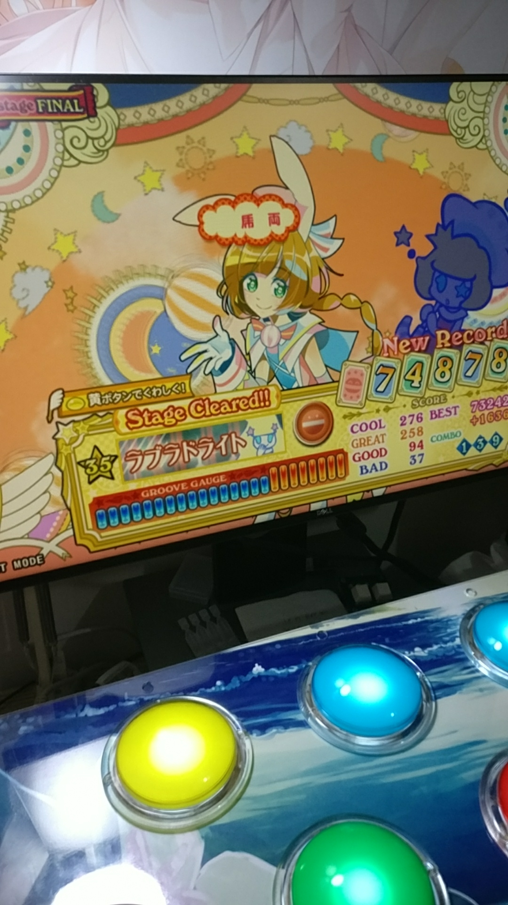

自制Pop'n Music 控制器（手台）制作资料
2017-10-22
台子
某宝Popn手台含邮1200往上走 于是自己动手做个料足好使的台子


制作资料
这里就只放制作资料 供动手能力强的人参考
物料单
外壳及连接件
- 订制木框(木板厚15mm)
- 亚克力顶板2 + 底板1
- 内外牙预埋M48螺母24个+平头手拧M416螺丝24个
按钮及改造用元件
- 某仿三和90g弹簧*9
- OMRON V-10-1A4 *9
- 国产按钮*9
电路板部分
- STM32F103C8T6最小系统板1 (主控 烧上TMK的固件就能用) + 适合长度的micro-usb线1
- 双面喷锡洞洞板*1
- 预做好的4P的XH2.54电子端子线9条+6.3mm插簧接线端子(带硅胶保护头)36只
- 20p的2.54mm排针*1
- 4P的XH2.54直插座*9
附件/耗材/用到的工具:
- 带背胶的硅胶脚垫12.76mm6个
- 240/400/600目砂纸 用于调教国产按钮
- 润滑膏
- 尖嘴钳 用于做线
外壳制作
这里的外壳方案为双层面板+木框+单层底板, 使用M4的预埋螺母+手拧螺丝, 其实可以把木框的底部封了, 可以省下底板的费用同时更省事.
设计参考dwg: 下载


关于主控板
为了省事就没设计专门的PCB 直接用现成的核心板+洞洞板来怼 灯光也直接常亮
固件
我这里用TMK的固件:
https://github.com/noodlefighter/popn_controller
Release里有编译好的HEX格式固件, 直接用烧录工具烧写进去即可…
比如用串口方式..只需要一个USB-TTL线配合Flash_Loader_Demonstrator工具即可完成烧写.. 自行搜索”stm32 串口下载”
固件效果就是把GPIO的PA0-PA7, PB0, PB1共9个IO口变成按键输入的管脚, 电平拉低时表示按钮按被下, 通过固件实现的标准的USB-HID免驱键盘设备发送到电脑上(对应按键ASDFGHJKL)
按键的调整
好的按键价格很高 建议买一般的国产按键自己调整:
- 更换合适的微动开关
- 更换合适的弹簧, 重新上润滑油
- 处理卡键问题, 差的按键做工不好, 容易卡键, 得用砂纸从低目到高目慢慢处理..


硬件
板子制作起来很简单 就是把核心板上的IO引出到直插接插件上 方便接线


于是
我也是有手台的人了(溜..)
